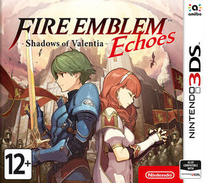
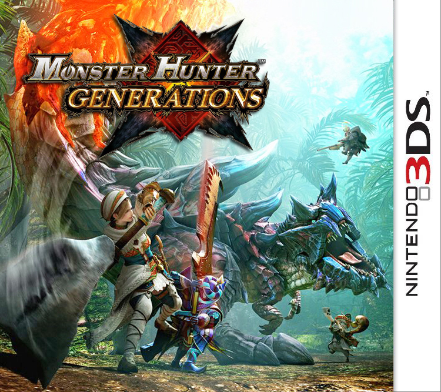
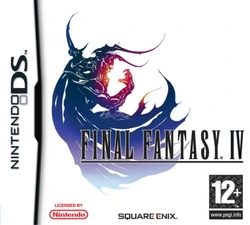
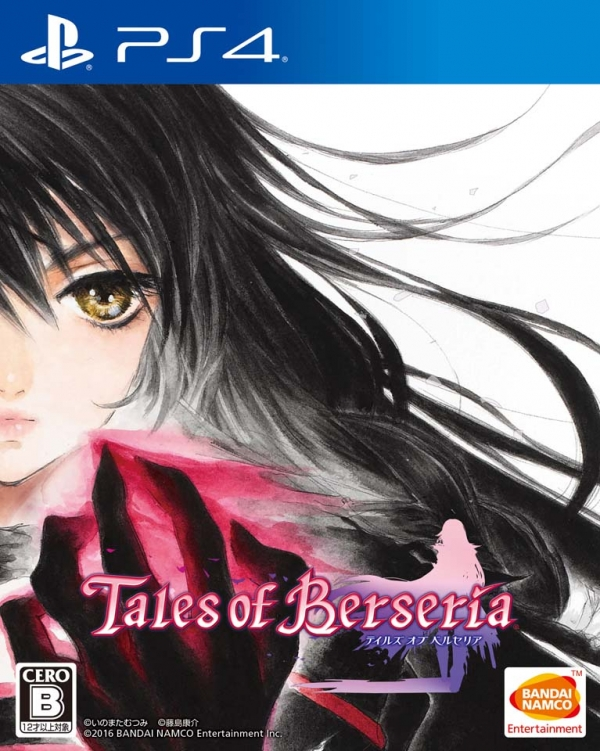
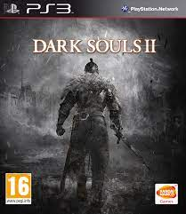
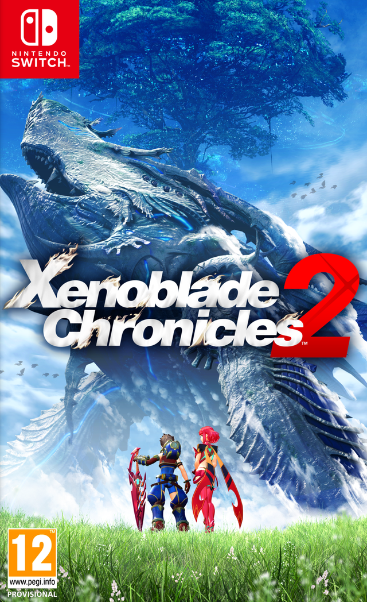
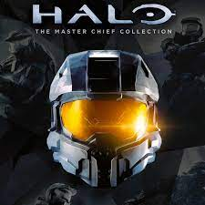

     
The Legend of Zelda: Breath of the Wild (яп. ゼルダの伝説 ブレス オブ ザ ワイルド Дзэруда но Дэнсэцу Бурэсу обу дза Вайрудо) — компьютерная игра в жанре action-adventure с открытым миром, разработанная и выпущенная японской компанией Nintendo для консолей Nintendo Switch и Wii U в 2017 году. Это девятнадцатая игра в серии The Legend of Zelda; её действие происходит в той же вымышленной стране Хайрул, что и в предыдущих играх серии, но долгое время спустя. Главный герой игры, Линк, пробуждается после столетнего сна; он должен бросить вызов Бедствию Ганону — злому существу, которое не раз угрожало Хайрулу на протяжении тысячелетий.
Xenoblade Chronicles, известная в Японии как Xenoblade (яп. ゼノブレイド Дзэнобурэйдо) — японская ролевая игра, разработанная компанией Monolith Soft[4] и изданная компанией Nintendo[5] эксклюзивно для игровой консоли Wii. Игра была анонсирована на выставке E³ в 2009 году. Изначально игра называлась Monado: Beginning of the World, но в январе 2010 года была переименована в Xenoblade, в честь Тэцуи Такахаси, который внёс существенный вклад в создание этой игры и над играми серии Xeno.
Call of Duty: Black Ops III — компьютерная игра в жанре научно-фантастического трёхмерного шутера от первого лица, двенадцатая во франшизе Call of Duty и третья в сюжетной подсерии Black Ops, начинавшейся как продолжение от кампании World at War; также последняя игра во франшизе, изданная на консолях седьмого поколения Xbox 360 и PlayStation 3. Разработанная в основной своей части студией Treyarch, Black Ops III была издана международной компанией Activision в ноябре 2015 года; ограниченные по функционалу версии игры для консолей седьмого поколения были разработаны студиями Beenox и Mercenary Technology. Действие Call of Duty: Black Ops III происходит в 2065 году, спустя 40 лет после событий Black Ops II; тем не менее, Black Ops III не является прямым продолжением предшествующих игр, ограничиваясь лишь общей идеей и ссылками в рамках сеттинга. Одиночная кампания разработана c поддержкой возможности кооперативного прохождения, что позволило задействовать более широкий и открытый дизайн уровней. Помимо одиночной кампании и сетевого режима, Black Ops III имеет самостоятельный режим борьбы с зомби, вернувшийся из предыдущих частей, и новый режим «Кошмары», доступный после прохождения основной кампании.
Halo: The Master Chief Collection — сборник компьютерных игр серии Halo. Сборник был выпущен в 2014 году для игровой консоли Xbox One, в 2019 году для Windows и в 2020 году — для Xbox Series X/S. Каждая игра в сборнике Master Chief Collection получила графическое обновление: Halo 2 получил полностью переработанный звук и видеоролики с высоким разрешением, эксклюзивные для коллекции, в честь своего 10-летнего юбилея. В сборник входят Halo: Combat Evolved Anniversary, Halo 2: Anniversary, Halo 3, Halo 3: ODST, Halo: Reach и Halo 4, которые изначально были выпущены на более ранних платформах Xbox.
Taiko no Tatsujin (яп. 太鼓の達人 тайко но тацудзин; «Мастер тайко») — серия видеоигр с участием антропоморфных барабанчиков тайко, разработанная компанией Namco и впервые выпущенная в 2001 году в качестве аркадного автомата. Весь процесс игры сводится к своевременному нажатию кнопок в такт исполняемой мелодии, что позволяет выстраивать сложные барабанные композиции. В зависимости от количества попаданий и наличия выстроенной цепочки (комбо) игроку начисляется определённое количество очков, которое влияет на исход игры. В идеале игрок должен составить максимально длинную цепочку, ни разу не промахнувшись (полное комбо). Полное комбо вознаграждается значком золотой медали рядом с названием мелодии в списке треков. Конечная цель тайко — совершенствовать своё мастерство, достигая невиданных до этого момента результатов. И, конечно, получать удовольствие от самого процесса игры на барабане.